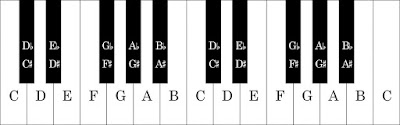
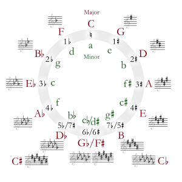

Теорија Т2
Добре дојдовте на страницата за предметот Теорија на музика. Линкови за лекциите:
Квинтен круг
Повеќе за квинтен круг, и за дурските и молските скали
Енхармонски тонови и скали
Транспонирање и Транспозиција
КВИНТЕН КРУГ (СКАЛИ И ПРЕДЗНАЦИ)
Не е круг туку спирала, и оваа слика мислам дека најдобро го покажува тоа (ќе објаснам на часот)

Погледнете го и видеото, многу добро постапно објаснува
(иако не гради спирала, туку две половини од круг)
* На предметот Солфеж нема да работиме вежби во сите скали од квинтниот круг, но на предметот Теорија на музика ќе учиме за сите дурски и паралелните молски, нивните предзнаци и релации
КВИНТЕН КРУГ (СКАЛИ И ПРЕДЗНАЦИ)
Прво погледнете го објаснувањето за предзнаците: Accidentals
Квинтен круг (Circle of Fifths)
Претставено е како конструкција на бесконечни степеници (напредна лекција, која продолжува и за акордите, па, доволно е да погледнете до таму каде што зборувавме на часовите, до 04:00 минути, до темата Harmony)
Дурски скали (Major Scales)
Молски скали (Major Scales)
Појаснување: паралелните скали се викаат relative minor, или relative major
Има и објаснување и за природен, хармонски и мелодиски вид
ВЕЖБИ:
Ако веќе ги владеете скалите и ги разбирате термините на англиски, тогаш СУПЕР, почнете да вежбате сами и самостојно креирајте си прашања со различна тежина :)
ЕНХАРМОНСКИ ТОНОВИ И СКАЛИ
Енхармонски тонови (Enhamonic Equivalents / Musical Homophones) се тонови кои во темпетираниот систем имаат иста висина. (gis¹ = as¹)
На сликата се прикажани енхармонските тонови кои може да имаат различно име, а во темперираниот систем да звучат со иста фреквенција (да бидат интонирани на иста црна дирка)

Но, и останатите тонови (на белите дирки) имаа свои енхармонски тонови.
Тоа е објаснето во оваа лекција Accidentals
1. Видео лекциja за енхармонските тонови (Enharmonic Equivalents)
2. Видео лекциja за енхармонските тонови (Enharmonic Equivalents)
3. Видео лекциja за енхармонските тонови (Enharmonic Equivalents) во која е објаснето и зошто во скалите нема тонови со „исто“ име, од кои едниот е повишен или снижен
ОБЈАСНУВАЊЕ ЗА ТЕМПЕРИРАНИОТ СИСТЕМ (Temperament)

 eng.jpg)
Енхармонските скали во квинтен круг

Транспонирање и транспозиција
Транспонирање или транспозиција е преместување или пренесување на нотниот текст во запис кој што ќе почнува и ќе претставува различна тонска висина (повисоко или пониско) задржувајќи ги сите мелодиско-ритмички карактеристики. Може да транспонираме од еден во друг клуч во различни октави нагоре или надолу, или да транспонираме за одреден интервал нагоре или надолу во нов тоналитет (скала), но можно е и само да го промениме знакот за такт, а мелодијата да остане метро-ритмички идентична, но запишана со поголеми или помали нотни вредности, односно во такт со различна мерна единица (МЕ) Во видеото е објаснето зошто е потребно транспонирањето од еден во друг тоналитет (key) во односно на различните инстрименти и нивното штимање (concert pitch)
1. Транспонирање во различен клуч:Мелодијата запишана во виолински клуч, C-dur, во 3/4 такт е транспонирана за октава пониско во бас клуч, тактот не е променет. (ова е работено претходно на часовите)
[на примерот бр.1 на сликата прво се запишуваат абецедните имиња на тоновите во оригиналната мелодија, потоа се запишуваат имињата за една октава пониско во бас клуч, и на крај нотниот текст во бас клуч. Внимаваме на позициите на нотните вратови, во бас клуч за тие ноти потребно е да се надолу]
2. Транспонирање во такт со различна МЕ (мерна единица):
Мелодијата е запишана во виолински клуч, C-dur, во 3/4 такт, а потоа е транспонирана во 3/2 и 3/8 такт. Клучот и тоналитетот не се променети. (ова е актуелно сега, и има вежби на следната слика)
[на примерот бр.2 на сликата прво се запишуваат бројот на времиња/удари во оригиналниот такт 3/4, потоа истите број времиња/удари се препишува во веќе подготвен 3/2 такт. Сега размислуваме со нова МЕ (мерна единица), конкретно со половина нота - таа трае еден удар во новиот 3/2 такт ... и според таа ориентација ги пишуваме и останатите помали или поголеми нотни вредности во примерот. Истото го повторуваме и во 3/8 такт каде што МЕ е осмината, размилуваме во новиот такт и внимаваме какви нотни вредности треба да запишеме според бројот на удари за секоја нота.]
3. Транспонирање во различен тоналитет:
Мелодијата во 3/8 такт во C-dur е транспонирана во G-dur. Тактот и мерната единица не се променети, ниту пак клучот, но променет тоналитетот. (ова ќе го работиме повеќе следната учебна година)
[на примерот бр.3 на сликата прво се запишуваат стапалата во C-dur, а потоа во транспозицијата според истите стапала размислуваме и запишуваме во G-dur. Прво стапало во C-dur e тонот ДО, a во G-dur тоа е СОЛ]
Во видеото е објаснето како да внимаваме на предзнаците пред тоновите ако транспонираме мелодија од еден во друг тоналитет (key)